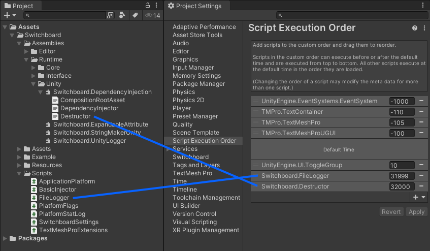
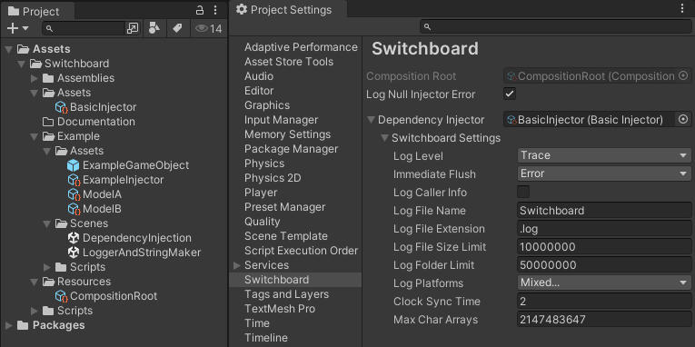
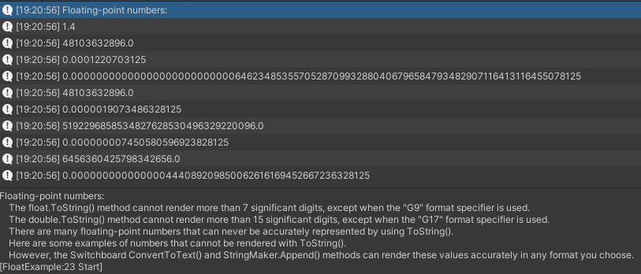
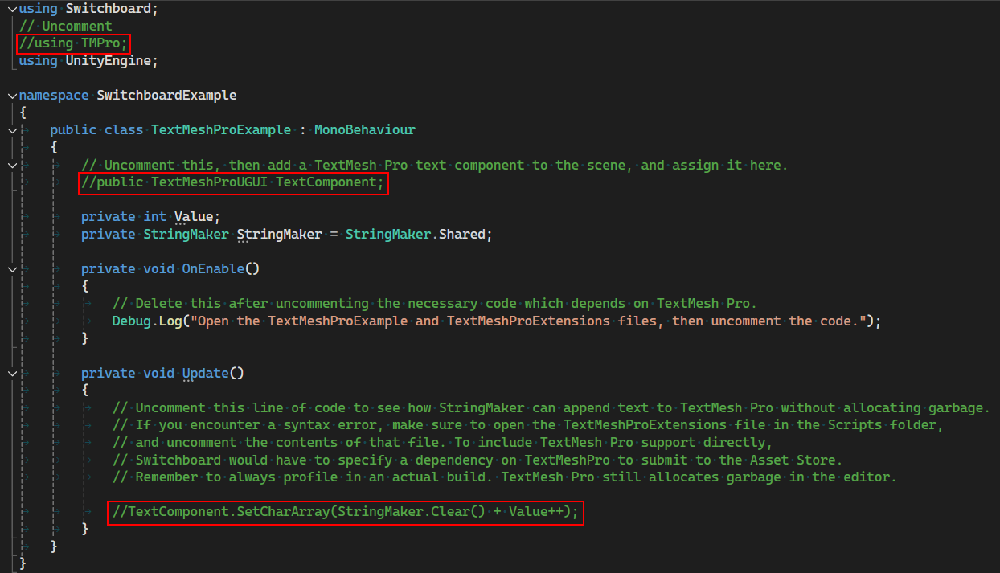
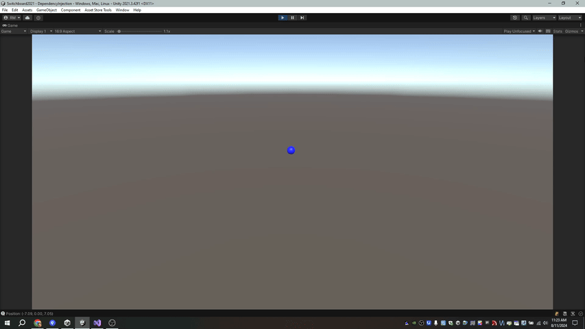
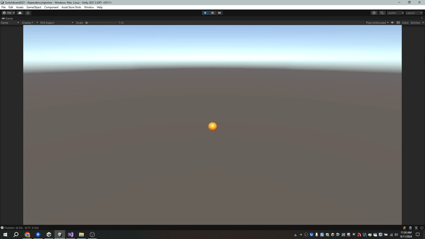

Installation and Setup
Switchboard is available for download through the Unity Asset Store: https://assetstore.unity.com/packages/tools/utilities/switchboard-250879.
After importing Switchboard, log files are automatically enabled. Just press play, and then view the resulting log files in your Application.persistentDataPath directory. You can use the StringMaker class to reduce garbage memory allocation from strings. The default BasicInjector provides an ILogger interface that accepts a StringMaker, for zero-garbage logging. The TextMeshProExtensions add a SetCharArray method to TextMesh Pro that accepts a StringMaker, for zero-garbage UI text manipulation. With your own DependencyInjector derived class you can define what happens when the app starts, and what type of dependencies to inject. MonoBehaviours can reference these dependencies using the InjectorLocator.
Script Execution Order
To properly use dependency injection, ensure that the script execution order of the Destructor component is set to the highest possible value, so that the DependencyInjector.Deactivation method occurs after all other MonoBehaviours have been destroyed. This should already be set, but it is good to check for yourself. You can do this by expanding the Switchboard.DependencyInjection.dll and dragging the Destructor class to the Script Execution Order menu in the Project Settings window.
For log files, ensure that the script execution order of the FileLogger is set as high as possible, except for the Destructor, so that the FileLogger will flush queued log entries to disk during the final LateUpdate at the end of each frame. Again, this should already be set, but it's good to make sure.

Basic Injector
Open the Switchboard menu in the Project Settings window. This will automatically create a CompositionRootAsset if necessary, located at Switchboard/Resources/CompositionRoot.asset. This asset is required by Switchboard's dependency injection assembly at run time. The name of the file cannot be changed, but it can be relocated to any Resources directory.
A BasicInjector instance should already be assigned by default. The BasicInjector provides a standard method for activating Switchboard's log files and injecting the ILogger dependency into MonoBehaviour components. You may assign a DependencyInjector asset to the composition root, or disable the "Log Null Injector Error" option to ignore dependency injection.

Log Level
Log entries below this level will not be recorded.
Immediate Flush
Log entries at or greater than this level will attempt to flush the log file immediately after queuing the log entry.
Log Caller Info
Display info about the method that called for the log entry, the file name, line number, and method name.
Log File Name
The name assigned to each log file before appending a time stamp.
Log File Extension
The file extension assigned to log files.
Log File Size Limit
The maximum size of each log file, in bytes.
Log Folder Limit
The maximum total number of bytes allowed for all log files in the log file directory.
Log Platforms
The hardware platforms where log files will be enabled.
Clock Sync Time
How often to synchronize with the system clock, in seconds. This affects time stamps in the standard log formatter.
Max Char Arrays
The maximum number of character arrays that can be stored in the character array pool shared by all StringMaker instances.
Get Dependencies
Call the InjectorLocator.GetInjector method to reference the assigned DependencyInjector via the IInjector interface. If the IInjector instance is not null, use the IInjector.Get method to request a dependency of a certain type. If a dependency is required for the script to function properly, attempt to get the dependency in the OnEnable method, and if it is unavailable then disable the component. The IInjector.TryGet method returns a boolean to indicate whether the dependency was provided.
public class ExampleMonoBehaviour : MonoBehaviour
{
private ILogger Logger;
private IService RequiredDependency;
private void OnEnable()
{
IInjector injector = InjectorLocator.GetInjector();
// Optional Dependencies (Check for null before using them.)
Logger = injector?.Get<ILogger>();
// Required Dependencies
if(injector == null)
{
enabled = false;
Debug.LogError("IInjector unavailable.");
}
else if(!injector.TryGet(out Logger))
{
enabled = false;
Debug.LogError("Logger unavailable.");
}
else if(!injector.TryGet(out RequiredDependency))
{
enabled = false;
Logger.LogError("A required dependency was not provided.");
}
else
{
// Dependencies validated. Proceed with OnEnable.
}
}
}
Logger and StringMaker
Open the LoggerAndStringMaker scene, then press play. The Console window will display some example numbers that can not be displayed with typical C# code, like the ToString method. Highlight each log entry to compare the output of the ToString method with StringMaker. Open the FloatExample script to see how a StringMaker is used to log messages with the ILogger interface to avoid allocating garbage memory typically associated with strings. You can view the resulting log files in the Application.persistentDataPath on your computer.

TextMesh Pro
A TextMeshProExtensions class is included so that you can assign text to TextMesh Pro components without garbage memory allocations. The SetCharArray extension methods enable easy assignment of a StringMaker to a TextMesh Pro text component. The script is included with references to TextMesh Pro commented out, so Switchboard does not have an explicit dependency on TextMesh Pro. If you have the TextMesh Pro package installed, uncomment the included scripts, both TextMeshProExtensions, and the TextMeshProExample script. In the TextMeshPro example scene, create a TextMesh Pro text component, and assign it to the TextMeshProExample script. Press play to ensure the text is being updated every frame. Then, create a debug build of this scene to profile using the Profiler window. You should see that zero memory is allocated in the GC section of the profiler.

Dependency Injection
Open the DependencyInjection example scene. Assign the ExampleInjector asset to the Dependency Injector field in the Switchboard settings menu. There should already be a Model asset assigned in the ExampleInjector.

Press play, and see how the color and position of the example object are automatically injected into the ExampleMonoBehaviour. Change the color and properties of the assigned model to see how the changes update the object in the scene in real time.

Assign the other model asset to the ExampleInjector. See how the color and motion of the object change to match the new model. Notice that this model is a different class with different properties. Change the properties to continue affecting the scene.

Stop playing, and notice that the changes you made to the model data are not lost the way that changes to the scene are lost. This enables you to modify properties while playing without losing any of your changes.
The ExampleMonoBehaviour has a simple dependency, an interface that provides color and position. Any object capable of providing these properties can fulfill that dependency. It has no reference to a concrete type. Therefore you can inject any type into it from the outside. Inspect the ExampleMonoBehaviour and notice how simple the class is, with no logic related specifically to movement. This type of separation is especially useful for separating UI components from the data they are supposed to represent.
Switchboard enables you to create a game independent from scenes. The heart of your application should live at the root of your project, and start automatically regardless of the scene. Dependencies are injected from the composition root outward, into any scene. Establishing cross-scene references without creating explicit type dependencies or spaghetti code is easy. The assigned DependencyInjector and its properties are easy to change in the editor. So, it's simple to swap out the actual code that other objects depend on. This allows you to treat scenes more like the view layer of your application. The modeled business logic of your game can live at the root of your project, as pure C# classes if you like. You can easily change modules and plugins without causing issues, or swap to mock objects for unit testing.
Custom Dependency Injector
Use the ExampleInjector class as a template for creating your own DependencyInjector. Create a new C# script, then copy the contents of the ExampleInjector and modify it to create a new DependencyInjector class. The class should either derive from BasicInjector or DependencyInjector. The BasicInjector class includes built-in log file functionality. Derive directly from the DependencyInjector class if you want to fully customize your DependencyInjector from scratch.
The CreateAssetMenu attribute is required to create an instance of the injector object within the project. If you want the create option to be in the Switchboard section of the Create Menu, use the attribute arguments (menuName = "Switchboard/Your Injector Name Here", order = SwitchboardMenuOrder.Value). You can define one DependencyInjector class and create multiple instances of separate injector assets with different property configurations, or create different injector classes for different scenarios.
Override the Activation, Deactivation, and Get methods. If deriving from from BasicInjector, these methods should include a call to the base method. The DependencyInjector base class has no base class functionality to call. Activation should call base.Activation at the start of the method, but Deactivation and Get should call their base methods at the end. If the Get method of your DependencyInjector derived class does not return an instance of Type T, it should return base.Get.
The Activation method will run when the application starts playing, before Awake, OnEnable, or Start methods are called on MonoBehaviours. You can instantiate game objects, components, or prefabs, and they will be added to the first scene before MonoBehaviours activate. However, the composition root enables you to use more pure C# classes that are injected out to scenes only if necessary. Objects that instantiate from the composition root may not need to be MonoBehaviours at all if they don't interact directly with scene components.
The Deactivation method will run when the application is ending, but don't assume it is guaranteed. Deactivation may not run in all cases. If the application closes suddenly, it is possible that this method may not be invoked. However, this method is where everything that was initialized during Activation can also be shut down gracefully when play is stopped in the editor.
The Get method provides an instance of the requested Type of object, if the DependencyInjector has been activated. This method will not be invoked until Activation has occurred, prior to Deactivation. You can use the typeof(T) operator to compare the request to a certain typeof(IInterface) and return an appropriate object as T.
[CreateAssetMenu(fileName = nameof(ExampleInjector), menuName = "Switchboard/Example Injector", order = SwitchboardMenuOrder.Value)]
public class ExampleInjector : BasicInjector
{
// Add properties.
protected override void Activation()
{
base.Activation();
// Activate your application.
}
protected override void Deactivation()
{
// Deactivate your application.
base.Deactivation();
}
// Provide dependencies via IInjector.Get<T>().
public override T Get<T>()
{
Type type = typeof(T);
if(type == typeof(IService))
return Service as T;
return base.Get<T>();
}
}